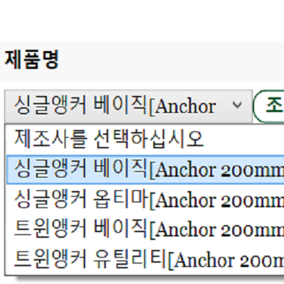
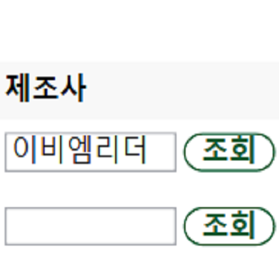
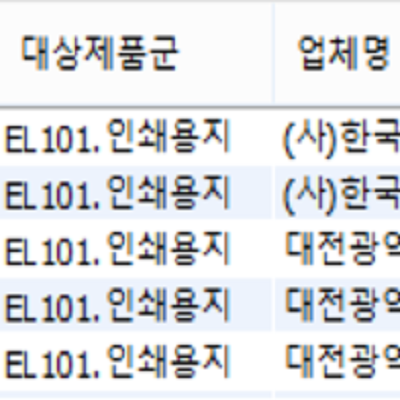

Implemented Functions
|  |
A function to Select Values Automatically It selects values such as product name randomly automatically. |
|  |
A function to Input Values Automatically It enters values such as name and size randomly automatically. |
|  |
A function to Create Database Tables Automatically It aggregates all the values obtained so far and creates a SQL file to create a database table automatically. |
Background and Purpose
I attended the project while working at 'DearGreen Co., Ltd.'.
I attended the project while working at 'DearGreen Co., Ltd.'.
What I Learned
- I learned how to control my keyboard and mouse with pyautogui in Python.
- I learned how to press keyboard shortcuts with pyautogui and pyperclip in Python.
- I learned how to create a SQL file with Python.
A thing to have Done my Best to Strengthen my Abilities
Controlling keyboard and mouse with Python
Controlling keyboard and mouse with Python
Overall Structure and Used Skills

- Python (Single Program): I implemented an automation program.
Development Environment
- Python 3.9 IDLE: I used it to implement automation programs.
Further Explanations
- (Please understand that I cannot release the source code as this program is actually in business.)